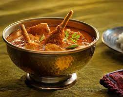

NatuKodi Pulusu

Description
South Indian Style of spicy and tasty chicken soup
Ingredients
- 500 gms country chicken
- 1/2 lemon
- 1 onion (sliced)
- 5 Green chillies (sliced)
- 2 tsp oil
- 1 tsp turmeric
- Salt as per taste
- Red chilli powder as per taste
- 2 tsp Ginger garlic paste
For masala :
- 1/2 tsp jeera
- 1/2 tsp cloves
- 1/2 tsp pepper
- 1/2 tsp elachi
- 1 tsp khus khus
- 1 1/2 tsp coriander
- 1 tomato
Steps
- Roast poppy seeds and coriander seeds separately on low flame.
- On the same pan, add green cardamom, cinnamon sticks, star anise, sayajeera, black pepper and cloves.
- Transfer all roasted spices in a blender, add coconut piece and make soft-paste by adding little water.
- Heat oil in a cookware and fry onions.
- Once onions turn translucent, add curry leaves, green chillies.
- Add ginger-garlic paste and sauté till its raw flavor is cooked.
- Put chicken pieces, turmeric powder and salt. Mix well.
- Place a bit large bowl over an existing bowl and pour water so that the bigger bowl helps in locking hot air escape by creating pressure as well as the water gets heated.
- After 2 minutes of cooking, remove the lid and sprinkle red chilli powder, add hot water and mix well.
- As country chicken takes more time and water to cook, add 1 glass full water the same as the above step.
- Remove lid and put masala paste and hot water into it. Mix well.
- Meanwhile, make buttermilk by adding sour curd and little water.
- Add buttermilk to Natukodi Pulusu when it is almost done
- Garnish Natu Kodi Pulusu Recipe with coriander leaves and serve hot with vegetable Biryani.